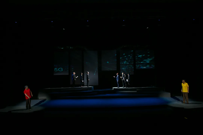

红色 校史剧
战邮发祥
八路军战邮干训班的交通员通过邮务、交通、发行建立通信联系，有力支援革命战争，有效打击日本侵略者,而这便是南邮的前身。
人与文件共存亡
“人在文件在、人与文件共存亡”，为了掩护同志并确保党中央秘密情报的安全，警卫员同志选择了牺牲自我，小安报国带着光荣的使命和坚定的信仰继续前进

跟着党走
安报国向书记秦华礼主动申请前往无人知晓的戈壁滩上为国家核事业干一番大业，面对再次怀孕，渴望拥有孩子的妻子，安报国有过犹豫。但老书记、老红军秦华礼“跟着党走，无论走到哪，死了也光荣”的坚定信仰， 让他继续走下去。
步入低谷
繁忙的工作让他疏于对妻女的关心与陪伴。女儿高考落榜与南邮失之交臂，倍觉委屈。妻子因长期的病痛而离世，女儿对这个家再无留恋，决定出国留学。父女间就此爆发正面冲突，女儿带着愤恨与遗憾，留洋海外。

国际会议激烈交锋
一面是作为中国代表团成员的张牧阳与国外代表团成员的Hendry在ITU无线通信局会议上的激烈交锋>。另一面是安报国与秦华礼的门球友谊赛。语意双关的对白，双方有来有往，彼此充满默契，让观众心领神会！
团圆结局
面对继续留在海外还是回国任教南邮的选择，安玥瑶犹豫不决，最终“学成必归”的信念让她选择回到南邮，为中国的邮电通信事业贡献自己的力量。父女二人冰释前嫌，迎来大团圆的结局